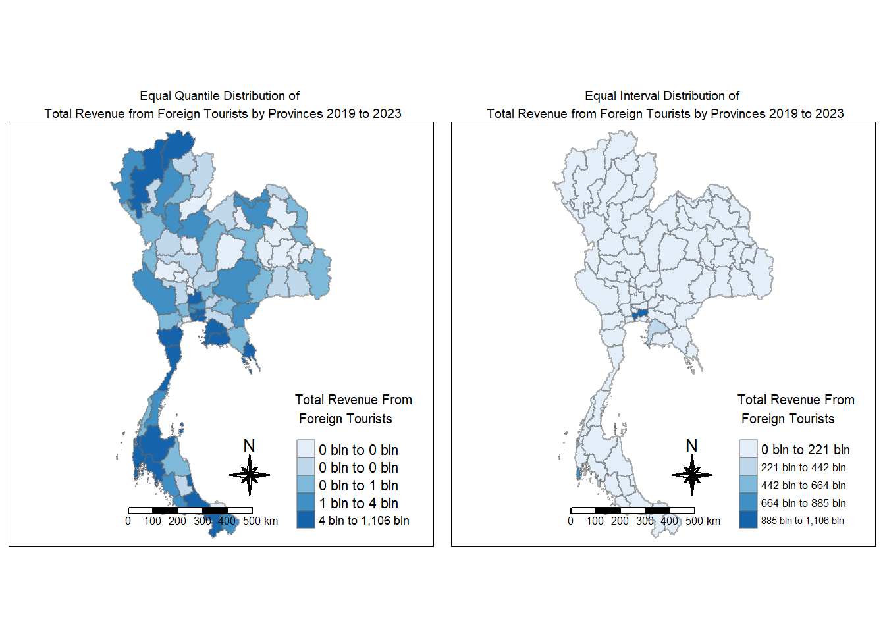

pacman::p_load(sf, sp, sfdep, raster, spatstat, tmap, tidyverse, lubridate, readxl, spNetwork, plotly, tidyverse, Kendall, knitr, spdep, patchwork)
set.seed(1234) #set seed to ensure the result is consistentTake-Home Exercise 2
This page documents the codes and the analysis performed for Take Home Exercise 02.
The objectives of this exercise is to discover:
If the key indicators of tourism economy of Thailand are independent from space and space and time.
If the tourism economy is indeed spatial and spatio-temporal dependent, then, you would like to detect where are the clusters and outliers, and the emerging hot spot/cold spot areas.
Since tourism data used in this assignment covers, Pre, During and Post COVID-19 Pandemic period, the focus of this assignments will be on the foreign tourists related indicators from 2019 to 2023.
Loading of Libraries
Due to the exploration of Geo spatial techniques, more packages were loaded to facilitates the different techniques used.
Data preparation and Transformation
Loading of Thailand - Subnational Administrative Boundaries
This assignment focuses on the analysis of tourism related on foreigners indicators on Province level of the Kingdom of Thailand.
The Thailand - Subnational Administrative Boundaries at HDX is used for the analysis.
#|eval: false
SAB_1 = st_read(dsn = "data", layer = "tha_admbnda_adm1_rtsd_20220121")%>%
st_transform(crs = 32647)Reading layer `tha_admbnda_adm1_rtsd_20220121' from data source
`C:\dewschan\ISSS622-GAA\Take_home_Ex\Take_home_02\data' using driver `ESRI Shapefile'
Simple feature collection with 77 features and 16 fields
Geometry type: MULTIPOLYGON
Dimension: XY
Bounding box: xmin: 97.34336 ymin: 5.613038 xmax: 105.637 ymax: 20.46507
Geodetic CRS: WGS 84Writing and Reading the Province data to rds folder
write_rds(SAB_1,"data/rds/SAB_1.rds")
#to save the file to rds#re-reading the acc file to the environments
SAB_1<-read_rds("data/rds/SAB_1.rds")Loading and preparation of Thailand Tourism Statistics
The Thailand Domestic Tourism Statistics at Kaggle is used for this analysis. This section show the code for data preparation and transformation of theThailand Toursim Statistics.
Tour_data <- read_csv("data/thailand_domestic_tourism_2019_2023_ver2.csv")Standardizing the Province Names with the Thailand Subnational Administrative Boundaries.
Tour_data <- Tour_data %>%
mutate(province_eng = case_when(
province_eng == "Buriram" ~ "Buri Ram",
province_eng == "Chainat" ~ "Chai Nat",
province_eng == "Chonburi" ~ "Chon Buri",
province_eng == "Lopburi" ~ "Lop Buri",
province_eng == "Nong Bua Lamphu" ~ "Nong Bua Lam Phu",
province_eng == "Phang Nga" ~ "Phangnga",
province_eng == "Prachinburi" ~ "Prachin Buri",
province_eng == "Sisaket" ~ "Si Sa Ket",
TRUE ~ province_eng
))
Tour_data <-rename(Tour_data, ADM1_EN = province_eng, Date_tour = date )Writing and Reading the data in Tourism Statistics to rds folder
write_rds(Tour_data,"data/rds/Tour_data.rds")
#to save the file to rdsTour_data<-read_rds("data/rds/Tour_data.rds")
#re-reading the acc file to the environmentsData Transformation
Transform tour data from long table into a table with the 8 different indicators in the variables column into individual column for data analysis.
tour_data_wide <- pivot_wider(Tour_data, names_from = "variable", values_from = "value")
write_rds(tour_data_wide,"data/rds/tour_data_wide.rds")Reading the wide data in Tourism Statistics from rds folder:
#re-reading the acc file to the environments
tour_data_wide<-read_rds("data/rds/tour_data_wide.rds")Joining the aspatial long data to geospatial data:
The aspatial data was joined to geospatial data using the column named “ADM1_EN” which consist of the province name of the Kingdom of Thailand.
SAB1_tour_wide <- left_join(SAB_1, tour_data_wide)
write_rds(SAB1_tour_wide,"data/rds/SAB1_tour_wide.rds")Reading the joined aspatial and geospatial data from rds folder:
SAB1_tour_wide<-read_rds("data/rds/SAB1_tour_wide.rds")Visualising Foreign Tourists Indicators for year 2019 to 2023
The following code chunks are to generate visualise indicators using Tmap function by the equal interval and equal quantile method.
Total revenue from foreign tourists.
# Create the map
#| fig-width: 12 #to widen the space
#| fig-height: 8 #to lengthen the graph.
tmap_mode("plot")
equal_TotRev <- tm_shape(Thai_total_for_prov) +
tm_fill("total_for_revenue",
style = "quantile",
palette = "Blues",
title = "Total Revenue From \n Foreign Tourists") +
tm_layout(main.title = "Equal Quantile Distribution of \n Total Revenue from Foreign Tourists by Provinces 2019 to 2023",
main.title.position = "center",
main.title.size = 0.6,
legend.height = 0.4,
legend.width = 0.3,
frame = TRUE) +
tm_borders(alpha = 0.5) +
tm_compass(type="8star", size = 2) +
tm_scale_bar()
quantile_TotRev<- tm_shape(Thai_total_for_prov) +
tm_fill("total_for_revenue",
style = "equal",
palette = "Blues",
title = "Total Revenue From \n Foreign Tourists") +
tm_layout(main.title = "Equal Interval Distribution of \n Total Revenue from Foreign Tourists by Provinces 2019 to 2023",
main.title.position = "center",
main.title.size = 0.6,
legend.height = 0.4,
legend.width = 0.3,
frame = TRUE) +
tm_borders(alpha = 0.5) +
tm_compass(type="8star", size = 2) +
tm_scale_bar()
tmap_arrange(equal_TotRev,
quantile_TotRev,
asp=1,
ncol=2)
# Create the map
#| fig-width: 12 #to widen the space
#| fig-height: 8 #to lengthen the graph.
tmap_mode("plot")
equal_nofor <- tm_shape(Thai_total_for_prov) +
tm_fill("total_no_for_tourist",
style = "quantile",
palette = "Blues",
title = "Total No. of Foreign Tourist") +
tm_layout(main.title = "Equal Quantile Distribution of Total No. of Foreign Tourist by \n Provinces 2019 to 2023",
main.title.position = "center",
main.title.size = 0.6,
legend.height = 0.4,
legend.width = 0.3,
frame = TRUE) +
tm_borders(alpha = 0.5) +
tm_compass(type="8star", size = 2) +
tm_scale_bar()
quantil_nofor<- tm_shape(Thai_total_for_prov) +
tm_fill("total_no_for_tourist",
style = "equal",
palette = "Blues",
title = "Total no. of Foreign Tourist") +
tm_layout(main.title = "Equal Interval of Total No. of Foreign Tourist by \n Provinces 2019 to 2023",
main.title.position = "center",
main.title.size = 0.6,
legend.height = 0.4,
legend.width = 0.4,
frame = TRUE) +
tm_borders(alpha = 0.5) +
tm_compass(type="8star", size = 2) +
tm_scale_bar()
tmap_arrange(equal_nofor,
quantil_nofor,
asp=1,
ncol=2)
Amount of Revenue per Foreign Tourist
# Create the map
#| fig-width: 12 #to widen the space
#| fig-height: 8 #to lengthen the graph.
tmap_mode("plot")
equal_Amt <- tm_shape(Thai_total_for_prov) +
tm_fill("Amt_rev_per_for_tourist",
style = "quantile",
palette = "Blues",
title = "Amount of reveune per foreign Tourist") +
tm_layout(main.title = "Equal Quantile Distribution of \n Amount of reveune per Foreign Tourist by Provinces 2019 to 2023",
main.title.position = "center",
main.title.size = 0.6,
legend.height = 0.45,
legend.width = 0.35,
frame = TRUE) +
tm_borders(alpha = 0.5) +
tm_compass(type="8star", size = 2) +
tm_scale_bar()
quantil_Amt<- tm_shape(Thai_total_for_prov) +
tm_fill("Amt_rev_per_for_tourist",
style = "equal",
palette = "Blues",
title = "Amount of reveune per foreign Tourist") +
tm_layout(main.title = "Equal Interval of Amount of reveune \n per Foreign Tourist by Provinces 2019 to 2023",
main.title.position = "center",
main.title.size = 0.6,
legend.height = 0.45,
legend.width = 0.35,
frame = TRUE) +
tm_borders(alpha = 0.5) +
tm_compass(type="8star", size = 2) +
tm_scale_bar()
tmap_arrange(equal_Amt,
quantil_Amt,
asp=1,
ncol=2)
Exploratory Spatial Data Analysis:
For this assignment, we will be focusing of using distance weight matrix. This is used due to there are many islands in Thailand being the tourist hot-spots.
Fixed Distance weight Matrix
The following code chunk is to derive the spatial weight using distance based weight matrix.
# Assuming Thai_total_for_pro has a geometry column in a projected CRS
Thai_total_for_prov <- st_transform(Thai_total_for_prov, crs = 4326) # WGS84 CRS
longitude <- map_dbl(Thai_total_for_prov$geometry, ~st_centroid(.x)[[1]])
latitude <- map_dbl(Thai_total_for_prov$geometry, ~st_centroid(.x)[[2]])
coords <- cbind(longitude, latitude)
head(coords) longitude latitude
[1,] 100.6235 13.77183
[2,] 100.7102 13.59651
[3,] 100.3928 13.92416
[4,] 100.6824 14.06513
[5,] 100.5266 14.34535
[6,] 100.3485 14.62354k1 <- knn2nb(knearneigh(coords))
k1dists <- unlist(nbdists(k1, coords, longlat = TRUE))
summary(k1dists) Min. 1st Qu. Median Mean 3rd Qu. Max.
21.55 51.92 64.33 63.24 76.77 110.94 Thai_total_for_prov$ADM1_EN[match(max(k1dists), k1dists)][1] "Prachuap Khiri Khan"Since the maximum distance for the distance from one province to another is at 110.94, we will use 111 to build the fixed distance matrix.
#Based on the max distance from the fix distance neighbour
wm_d111 <- dnearneigh(coords, 0, 111, longlat = TRUE)
wm_d111Neighbour list object:
Number of regions: 77
Number of nonzero links: 350
Percentage nonzero weights: 5.903188
Average number of links: 4.545455
2 disjoint connected subgraphsstr(wm_d111)List of 77
$ : int [1:12] 2 3 4 5 6 10 11 15 17 59 ...
$ : int [1:10] 1 3 4 5 11 15 17 59 60 61
$ : int [1:13] 1 2 4 5 6 8 10 17 56 58 ...
$ : int [1:14] 1 2 3 5 6 8 10 15 16 17 ...
$ : int [1:13] 1 2 3 4 6 7 8 9 10 17 ...
$ : int [1:11] 1 3 4 5 7 8 9 10 17 58 ...
$ : int [1:7] 5 6 8 9 10 17 48
$ : int [1:10] 3 4 5 6 7 9 10 48 49 58
$ : int [1:7] 5 6 7 8 48 49 58
$ : int [1:9] 1 3 4 5 6 7 8 16 17
$ : int [1:6] 1 2 12 13 15 16
$ : int [1:3] 11 13 15
$ : int [1:5] 11 12 14 15 18
$ : int 13
$ : int [1:9] 1 2 4 11 12 13 16 17 18
$ : int [1:6] 4 10 11 15 17 18
$ : int [1:10] 1 2 3 4 5 6 7 10 15 16
$ : int [1:3] 13 15 16
$ : int 20
$ : int [1:2] 19 21
$ : int [1:2] 20 22
$ : int [1:2] 21 23
$ : int [1:2] 22 26
$ : int [1:3] 26 34 38
$ : int [1:2] 29 55
$ : int [1:4] 23 24 34 38
$ : int [1:2] 32 36
$ : int [1:4] 29 30 31 32
$ : int [1:3] 25 28 33
$ : int [1:3] 28 32 36
$ : int 28
$ : int [1:3] 27 28 30
$ : int [1:3] 29 34 35
$ : int [1:5] 24 26 33 35 38
$ : int [1:4] 33 34 36 38
$ : int [1:4] 27 30 35 37
$ : int [1:2] 36 38
$ : int [1:5] 24 26 34 35 37
$ : int [1:3] 40 41 47
$ : int [1:2] 39 41
$ : int [1:3] 39 40 43
$ : int [1:3] 43 52 53
$ : int [1:4] 41 42 44 52
$ : int [1:2] 43 45
$ : int [1:2] 44 46
$ : int 45
$ : int 39
$ : int [1:6] 7 8 9 49 50 54
$ : int [1:6] 8 9 48 50 57 58
$ : int [1:5] 48 49 51 52 54
$ : int 50
$ : int [1:4] 42 43 50 53
$ : int [1:4] 42 52 54 55
$ : int [1:4] 48 50 53 55
$ : int [1:3] 25 53 54
$ : int [1:5] 3 59 60 61 62
$ : int [1:2] 49 58
$ : int [1:9] 3 4 5 6 8 9 49 57 59
$ : int [1:10] 1 2 3 4 5 6 56 58 60 61
$ : int [1:9] 1 2 3 4 5 56 59 61 62
$ : int [1:8] 1 2 3 4 56 59 60 62
$ : int [1:4] 56 60 61 63
$ : int 62
$ : int [1:4] 65 68 73 74
$ : int [1:5] 64 66 67 68 73
$ : int [1:3] 65 67 68
$ : int [1:2] 65 66
$ : int [1:4] 64 65 66 69
$ : int [1:2] 68 70
$ : int 69
$ : int [1:3] 72 74 75
$ : int [1:3] 71 73 74
$ : int [1:4] 64 65 72 74
$ : int [1:4] 64 71 72 73
$ : int [1:3] 71 76 77
$ : int [1:2] 75 77
$ : int [1:2] 75 76
- attr(*, "class")= chr "nb"
- attr(*, "region.id")= chr [1:77] "1" "2" "3" "4" ...
- attr(*, "call")= language dnearneigh(x = coords, d1 = 0, d2 = 111, longlat = TRUE)
- attr(*, "dnn")= num [1:2] 0 111
- attr(*, "bounds")= chr [1:2] "GE" "LE"
- attr(*, "nbtype")= chr "distance"
- attr(*, "sym")= logi TRUEtable(Thai_total_for_prov$ADM1_EN, card(wm_d111))
1 2 3 4 5 6 7 8 9 10 11 12 13 14
Amnat Charoen 0 0 0 1 0 0 0 0 0 0 0 0 0 0
Ang Thong 0 0 0 0 0 0 0 0 0 0 1 0 0 0
Bangkok 0 0 0 0 0 0 0 0 0 0 0 1 0 0
Bueng Kan 0 1 0 0 0 0 0 0 0 0 0 0 0 0
Buri Ram 0 1 0 0 0 0 0 0 0 0 0 0 0 0
Chachoengsao 0 0 0 0 0 0 0 0 1 0 0 0 0 0
Chai Nat 0 0 0 0 0 0 1 0 0 0 0 0 0 0
Chaiyaphum 0 1 0 0 0 0 0 0 0 0 0 0 0 0
Chanthaburi 0 0 0 0 1 0 0 0 0 0 0 0 0 0
Chiang Mai 0 0 1 0 0 0 0 0 0 0 0 0 0 0
Chiang Rai 1 0 0 0 0 0 0 0 0 0 0 0 0 0
Chon Buri 0 0 0 0 0 1 0 0 0 0 0 0 0 0
Chumphon 1 0 0 0 0 0 0 0 0 0 0 0 0 0
Kalasin 0 0 0 1 0 0 0 0 0 0 0 0 0 0
Kamphaeng Phet 0 0 0 0 1 0 0 0 0 0 0 0 0 0
Kanchanaburi 0 1 0 0 0 0 0 0 0 0 0 0 0 0
Khon Kaen 0 0 1 0 0 0 0 0 0 0 0 0 0 0
Krabi 0 0 0 0 1 0 0 0 0 0 0 0 0 0
Lampang 0 0 1 0 0 0 0 0 0 0 0 0 0 0
Lamphun 0 1 0 0 0 0 0 0 0 0 0 0 0 0
Loei 1 0 0 0 0 0 0 0 0 0 0 0 0 0
Lop Buri 0 0 0 0 0 0 1 0 0 0 0 0 0 0
Mae Hong Son 1 0 0 0 0 0 0 0 0 0 0 0 0 0
Maha Sarakham 0 0 1 0 0 0 0 0 0 0 0 0 0 0
Mukdahan 0 0 0 0 1 0 0 0 0 0 0 0 0 0
Nakhon Nayok 0 0 0 0 0 0 0 0 0 1 0 0 0 0
Nakhon Pathom 0 0 0 0 0 0 0 0 0 1 0 0 0 0
Nakhon Phanom 0 1 0 0 0 0 0 0 0 0 0 0 0 0
Nakhon Ratchasima 1 0 0 0 0 0 0 0 0 0 0 0 0 0
Nakhon Sawan 0 0 0 0 0 1 0 0 0 0 0 0 0 0
Nakhon Si Thammarat 0 0 0 1 0 0 0 0 0 0 0 0 0 0
Nan 0 1 0 0 0 0 0 0 0 0 0 0 0 0
Narathiwat 0 1 0 0 0 0 0 0 0 0 0 0 0 0
Nong Bua Lam Phu 0 0 0 1 0 0 0 0 0 0 0 0 0 0
Nong Khai 0 0 1 0 0 0 0 0 0 0 0 0 0 0
Nonthaburi 0 0 0 0 0 0 0 0 0 0 0 0 1 0
Pathum Thani 0 0 0 0 0 0 0 0 0 0 0 0 0 1
Pattani 0 0 1 0 0 0 0 0 0 0 0 0 0 0
Phangnga 0 0 1 0 0 0 0 0 0 0 0 0 0 0
Phatthalung 0 0 0 1 0 0 0 0 0 0 0 0 0 0
Phayao 0 1 0 0 0 0 0 0 0 0 0 0 0 0
Phetchabun 0 0 1 0 0 0 0 0 0 0 0 0 0 0
Phetchaburi 0 0 0 1 0 0 0 0 0 0 0 0 0 0
Phichit 0 0 0 1 0 0 0 0 0 0 0 0 0 0
Phitsanulok 0 0 0 1 0 0 0 0 0 0 0 0 0 0
Phra Nakhon Si Ayutthaya 0 0 0 0 0 0 0 0 0 0 0 0 1 0
Phrae 0 0 0 1 0 0 0 0 0 0 0 0 0 0
Phuket 0 1 0 0 0 0 0 0 0 0 0 0 0 0
Prachin Buri 0 0 0 0 0 1 0 0 0 0 0 0 0 0
Prachuap Khiri Khan 1 0 0 0 0 0 0 0 0 0 0 0 0 0
Ranong 0 1 0 0 0 0 0 0 0 0 0 0 0 0
Ratchaburi 0 0 0 0 1 0 0 0 0 0 0 0 0 0
Rayong 0 0 1 0 0 0 0 0 0 0 0 0 0 0
Roi Et 0 0 0 0 1 0 0 0 0 0 0 0 0 0
Sa Kaeo 0 0 1 0 0 0 0 0 0 0 0 0 0 0
Sakon Nakhon 0 0 0 1 0 0 0 0 0 0 0 0 0 0
Samut Prakan 0 0 0 0 0 0 0 0 0 1 0 0 0 0
Samut Sakhon 0 0 0 0 0 0 0 0 1 0 0 0 0 0
Samut Songkhram 0 0 0 0 0 0 0 1 0 0 0 0 0 0
Saraburi 0 0 0 0 0 0 0 0 1 0 0 0 0 0
Satun 0 0 1 0 0 0 0 0 0 0 0 0 0 0
Si Sa Ket 0 1 0 0 0 0 0 0 0 0 0 0 0 0
Sing Buri 0 0 0 0 0 0 0 0 0 1 0 0 0 0
Songkhla 0 0 1 0 0 0 0 0 0 0 0 0 0 0
Sukhothai 0 0 0 1 0 0 0 0 0 0 0 0 0 0
Suphan Buri 0 0 0 0 0 0 0 0 1 0 0 0 0 0
Surat Thani 0 0 0 1 0 0 0 0 0 0 0 0 0 0
Surin 0 1 0 0 0 0 0 0 0 0 0 0 0 0
Tak 1 0 0 0 0 0 0 0 0 0 0 0 0 0
Trang 0 0 0 1 0 0 0 0 0 0 0 0 0 0
Trat 1 0 0 0 0 0 0 0 0 0 0 0 0 0
Ubon Ratchathani 0 1 0 0 0 0 0 0 0 0 0 0 0 0
Udon Thani 0 0 1 0 0 0 0 0 0 0 0 0 0 0
Uthai Thani 0 0 0 0 0 1 0 0 0 0 0 0 0 0
Uttaradit 0 0 1 0 0 0 0 0 0 0 0 0 0 0
Yala 0 1 0 0 0 0 0 0 0 0 0 0 0 0
Yasothon 0 0 1 0 0 0 0 0 0 0 0 0 0 0n_comp <- n.comp.nb(wm_d111)
n_comp$nc[1] 2table(n_comp$comp.id)
1 2
63 14 par(mfrow=c(1,2))
plot(Thai_total_for_prov$geometry, border="lightgrey", main="1st nearest neighbours")
plot(k1, coords, add=TRUE, col="red", length=0.08)
plot(Thai_total_for_prov$geometry, border="lightgrey", main="Distance link")
plot(wm_d111, coords, add=TRUE, pch = 19, cex = 0.6)
Observations from the fixed distance matrix.
Based on the outputs generated by fixed distance matrix, it is observed that the fixed distance matrix will generate a number of 7 provinces with only 1 neighbour, this is not ideal. Hence adaptive distance matrix is built.
Adaptive Distanace weight matrix
The following codes are to build the adaptive distance weight matrix, Examining if Adaptive distance weight matrix will be more suitable for the Analysis. Hence similar to the hands on exercise, we will use 6 nearest neighbours.
knn6 <- knn2nb(knearneigh(coords, k=6))
knn6Neighbour list object:
Number of regions: 77
Number of nonzero links: 462
Percentage nonzero weights: 7.792208
Average number of links: 6
Non-symmetric neighbours liststr(knn6)List of 77
$ : int [1:6] 2 3 4 5 59 60
$ : int [1:6] 1 3 4 11 59 60
$ : int [1:6] 1 2 4 5 59 60
$ : int [1:6] 1 2 3 5 17 59
$ : int [1:6] 1 3 4 6 8 10
$ : int [1:6] 4 5 8 9 10 58
$ : int [1:6] 5 6 8 9 10 17
$ : int [1:6] 5 6 7 9 10 58
$ : int [1:6] 6 7 8 48 49 58
$ : int [1:6] 4 5 6 7 8 17
$ : int [1:6] 1 2 12 13 15 16
$ : int [1:6] 2 11 13 14 15 16
$ : int [1:6] 11 12 14 15 16 18
$ : int [1:6] 11 12 13 15 16 18
$ : int [1:6] 1 2 11 12 16 17
$ : int [1:6] 4 10 11 15 17 18
$ : int [1:6] 1 4 5 10 15 16
$ : int [1:6] 13 15 16 17 19 20
$ : int [1:6] 10 16 17 18 20 25
$ : int [1:6] 18 19 21 22 33 34
$ : int [1:6] 20 22 24 26 33 34
$ : int [1:6] 20 21 23 24 26 34
$ : int [1:6] 21 22 24 26 34 38
$ : int [1:6] 22 23 26 34 35 38
$ : int [1:6] 7 19 28 29 33 55
$ : int [1:6] 22 23 24 34 35 38
$ : int [1:6] 28 30 32 35 36 37
$ : int [1:6] 25 29 30 31 32 35
$ : int [1:6] 25 28 30 33 34 35
$ : int [1:6] 27 28 29 32 35 36
$ : int [1:6] 28 30 32 42 53 55
$ : int [1:6] 27 28 30 31 35 36
$ : int [1:6] 20 21 24 29 34 35
$ : int [1:6] 21 24 26 33 35 38
$ : int [1:6] 24 29 33 34 36 38
$ : int [1:6] 27 30 32 35 37 38
$ : int [1:6] 24 26 27 35 36 38
$ : int [1:6] 24 26 34 35 36 37
$ : int [1:6] 40 41 43 45 46 47
$ : int [1:6] 39 41 43 47 51 52
$ : int [1:6] 39 40 42 43 45 52
$ : int [1:6] 31 41 43 44 52 53
$ : int [1:6] 40 41 42 44 45 52
$ : int [1:6] 31 41 42 43 45 46
$ : int [1:6] 39 41 42 43 44 46
$ : int [1:6] 39 40 41 43 44 45
$ : int [1:6] 39 40 41 43 45 46
$ : int [1:6] 7 8 9 49 50 54
$ : int [1:6] 8 9 48 50 57 58
$ : int [1:6] 48 49 51 52 53 54
$ : int [1:6] 40 48 49 50 52 54
$ : int [1:6] 41 42 43 50 51 53
$ : int [1:6] 31 42 50 52 54 55
$ : int [1:6] 9 48 50 52 53 55
$ : int [1:6] 7 25 31 48 53 54
$ : int [1:6] 1 3 59 60 61 62
$ : int [1:6] 6 9 49 56 58 59
$ : int [1:6] 5 6 8 9 49 59
$ : int [1:6] 1 3 4 5 60 61
$ : int [1:6] 1 2 3 56 59 61
$ : int [1:6] 1 3 56 59 60 62
$ : int [1:6] 3 56 59 60 61 63
$ : int [1:6] 2 56 60 61 62 70
$ : int [1:6] 65 66 67 68 73 74
$ : int [1:6] 64 66 67 68 73 74
$ : int [1:6] 64 65 67 68 69 73
$ : int [1:6] 64 65 66 68 73 74
$ : int [1:6] 64 65 66 67 69 70
$ : int [1:6] 64 65 66 67 68 70
$ : int [1:6] 63 64 65 66 68 69
$ : int [1:6] 72 73 74 75 76 77
$ : int [1:6] 64 71 73 74 75 76
$ : int [1:6] 64 65 67 71 72 74
$ : int [1:6] 64 65 71 72 73 75
$ : int [1:6] 71 72 73 74 76 77
$ : int [1:6] 71 72 73 74 75 77
$ : int [1:6] 71 72 73 74 75 76
- attr(*, "region.id")= chr [1:77] "1" "2" "3" "4" ...
- attr(*, "call")= language knearneigh(x = coords, k = 6)
- attr(*, "sym")= logi FALSE
- attr(*, "type")= chr "knn"
- attr(*, "knn-k")= num 6
- attr(*, "class")= chr "nb"Plotting Adaptive Distance-based Neighbours
par(mfrow=c(1,2))
plot(Thai_total_for_prov$geometry, border="lightgrey",main="6 nearest neighbours")
plot(knn6, coords, pch = 19, cex = 0.6, add = TRUE, col = "red")
plot(Thai_total_for_prov$geometry, border="lightgrey", main="Distance link")
plot(wm_d111, coords, add=TRUE, pch = 19, cex = 0.6)
Observations from the fixed distance matrix.
It is noted that the adaptive distance matrix maybe more suitable for this analysis due to standardization of neighbours, given there are many islands in Thailand and geographical layout of Thailand.
As part of the exploration, the row standardized weights matrix, were built using the both adaptive and fixed distance martix.
Row-Standardised Weights martix
Using fixed distance martix
rswm_d111 <- nb2listw(wm_d111, style="W", zero.policy = TRUE)
rswm_d111Characteristics of weights list object:
Neighbour list object:
Number of regions: 77
Number of nonzero links: 350
Percentage nonzero weights: 5.903188
Average number of links: 4.545455
2 disjoint connected subgraphs
Weights style: W
Weights constants summary:
n nn S0 S1 S2
W 77 5929 77 49.37234 320.9424rswm_d111$weights[10][[1]]
[1] 0.1111111 0.1111111 0.1111111 0.1111111 0.1111111 0.1111111 0.1111111
[8] 0.1111111 0.1111111Using adaoptive distance martix
rswm_knn6 <- nb2listw(knn6, style="W", zero.policy = TRUE)
rswm_knn6Characteristics of weights list object:
Neighbour list object:
Number of regions: 77
Number of nonzero links: 462
Percentage nonzero weights: 7.792208
Average number of links: 6
Non-symmetric neighbours list
Weights style: W
Weights constants summary:
n nn S0 S1 S2
W 77 5929 77 22.77778 319.4444rswm_knn6$weights[10][[1]]
[1] 0.1666667 0.1666667 0.1666667 0.1666667 0.1666667 0.1666667Spatial lag with row-standardized weights
Finally, we’ll compute the average neighbor values for the 3 foreign tourist indicators for each polygon. These values are often referred to as spatially lagged values. As discussed in the earlier session, we will be creating using the adaptive distance matrix, hence rswm_knn6 will be used.
This section, we will be deriving the row standadised weight matrix for each indicators.
Total_rev.lag <- lag.listw(rswm_knn6, Thai_total_for_prov$total_for_revenue)
Total_rev.lag [1] 2632245700 234844619033 186852994917 186759552700 184834014117
[6] 1656020000 1405093667 1411425333 68396667 1634931333
[11] 186485341667 52891616667 53162270000 51428566667 236382986667
[16] 50479650000 186110098333 542488333 371410333 435401667
[21] 104560000 246893333 166201667 269321667 400613333
[26] 271233333 709568333 780531667 316098333 468840000
[31] 891513333 347095000 205848333 162133333 225955000
[36] 813895000 142653333 87833333 2909921667 12347825000
[41] 11684091667 753618333 548273333 2378015000 13625095000
[46] 11561738333 13642661667 40811667 588846667 573758333
[51] 379753333 457740000 409405000 586491667 272226667
[56] 185588416033 142260250 1404896917 186144302117 185488927700
[61] 185608924367 3300536033 2028108333 165495163333 150208280000
[66] 155790093333 43641733333 147462251667 165331390000 46352168333
[71] 1736048333 9136983333 145637320000 24073928333 9763171667
[76] 9126200000 9280406667nb1 <- knn6[[1]]
nb1 <- Thai_total_for_prov$total_for_revenue[nb1]
nb1[1] 4971250000 898464700 1569688000 7975590000 358861500 19620000lag.list <- list(Thai_total_for_prov$ADM1_EN, lag.listw(rswm_knn6, Thai_total_for_prov$total_for_revenue))
lag.res <- as.data.frame(lag.list)
colnames(lag.res) <- c("ADM1_EN", "lag.total_for_revenue")
Thai_total_for_prov<- left_join(Thai_total_for_prov,lag.res)lag.list <- list(Thai_total_for_prov$ADM1_EN, lag.listw(rswm_knn6,Thai_total_for_prov$total_no_for_tourist))
lag.res <- as.data.frame(lag.list)
colnames(lag.res) <- c("ADM1_EN", "lag.total_no_for_tourist")
Thai_total_for_prov<- left_join(Thai_total_for_prov,lag.res)lag.list <- list(Thai_total_for_prov$ADM1_EN, lag.listw(rswm_knn6,Thai_total_for_prov$Amt_rev_per_for_tourist))
lag.res <- as.data.frame(lag.list)
colnames(lag.res) <- c("ADM1_EN", "lag.Amt_rev_per_for_tourist")
Thai_total_for_prov<- left_join(Thai_total_for_prov,lag.res)head(Thai_total_for_prov)Simple feature collection with 6 features and 10 fields
Geometry type: MULTIPOLYGON
Dimension: XY
Bounding box: xmin: 100.1913 ymin: 13.47842 xmax: 100.9639 ymax: 14.80246
Geodetic CRS: WGS 84
Shape_Leng Shape_Area ADM1_EN date total_for_revenue
1 2.417227 0.13133873 Bangkok 2019-02-18 1.106223e+12
2 1.695100 0.07926199 Samut Prakan 2019-02-18 4.971250e+09
3 1.251111 0.05323766 Nonthaburi 2019-02-18 8.984647e+08
4 1.884945 0.12698345 Pathum Thani 2019-02-18 1.569688e+09
5 3.041716 0.21393797 Phra Nakhon Si Ayutthaya 2019-02-18 7.975590e+09
6 1.739908 0.07920961 Ang Thong 2019-02-18 4.717000e+07
total_no_for_tourist Amt_rev_per_for_tourist lag.total_for_revenue
1 44452634 24885.431 2632245700
2 2183088 2277.164 234844619033
3 403338 2227.573 186852994917
4 750370 2091.885 186759552700
5 2961839 2692.783 184834014117
6 42073 1121.147 1656020000
lag.total_no_for_tourist lag.Amt_rev_per_for_tourist
1 1080228.0 2205.005
2 10074916.5 8934.774
3 8421777.3 5981.315
4 8368454.0 6270.697
5 7631444.5 5676.711
6 653539.7 1976.673
geometry
1 MULTIPOLYGON (((100.6139 13...
2 MULTIPOLYGON (((100.7306 13...
3 MULTIPOLYGON (((100.3415 14...
4 MULTIPOLYGON (((100.8916 14...
5 MULTIPOLYGON (((100.5131 14...
6 MULTIPOLYGON (((100.3332 14...After deriving the spatial lag indicators, the following code chunks is to plot them to view the differences between them.
Total_no <- qtm(Thai_total_for_prov, "total_no_for_tourist")
lag_no <- qtm(Thai_total_for_prov, "lag.total_no_for_tourist")
tmap_arrange(Total_no , lag_no, asp=1, ncol=2)amt <- qtm(Thai_total_for_prov, "Amt_rev_per_for_tourist")
lag_amt <- qtm(Thai_total_for_prov, "lag.Amt_rev_per_for_tourist")
tmap_arrange(amt, lag_amt, asp=1, ncol=2)Total_rev <- qtm(Thai_total_for_prov, "total_for_revenue")
lag_Total_rev <- qtm(Thai_total_for_prov, "lag.total_for_revenue")
tmap_arrange(Total_rev, lag_Total_rev, asp=1, ncol=2)##Computing Global Spatial Autocorrelation Statistics
Next we will be carrying out test to find if there is any spatial correlation in the tourist hot-spots.
H0: Observed spatial patterns of values is equally, data is randomly disbursed and no spatial pattern
H1: Data is more spatially clustered.
Computing Global Moran’ I
Moran’s I statistical test was performed by using moran.test() of spdep. Moran’s I describe how features differ from the values in the study area as a whole. The Moran I statistic ranges from -1 to 1. If the Moran I is:
positive (I >0): Clustered, observations tend to be similar
negative (I <0): Disperse, observations tend to be dissimilar
approximately or near to zero: observations arranged randomly over space
Total Revenue from Foreign Tourist.
moran.test(Thai_total_for_prov$total_for_revenue,
listw=rswm_knn6,
zero.policy = TRUE,
na.action=na.omit)
Moran I test under randomisation
data: Thai_total_for_prov$total_for_revenue
weights: rswm_knn6
Moran I statistic standard deviate = 0.50503, p-value = 0.3068
alternative hypothesis: greater
sample estimates:
Moran I statistic Expectation Variance
0.008385629 -0.013157895 0.001819717 bperm_tot = moran.mc(Thai_total_for_prov$total_for_revenue,
listw = rswm_knn6,
nsim = 99,
zero.policy = TRUE,
na.action = na.omit)
bperm_tot
Monte-Carlo simulation of Moran I
data: Thai_total_for_prov$total_for_revenue
weights: rswm_knn6
number of simulations + 1: 100
statistic = 0.0083856, observed rank = 83, p-value = 0.17
alternative hypothesis: greaterObservation on the global Moran test for total revenue generated from foreign tourists
The statistical report on shows that the p-value is larger than alpha value of 0.05. Hence, we don’t have statistical evidence to reject the null hypothesis that the spatial distribution of total foreign spending in Thailand may resemble random distribution (i.e. independent from spatial). Because the Moran’s I statistics is close 0. We can infer that the spatial distribution shows sign of randomness and is not related to spatial.
Total number of foreign tourist
moran.test(Thai_total_for_prov$total_no_for_tourist,
listw=rswm_knn6,
zero.policy = TRUE,
na.action=na.omit)
Moran I test under randomisation
data: Thai_total_for_prov$total_no_for_tourist
weights: rswm_knn6
Moran I statistic standard deviate = 1.3917, p-value = 0.08201
alternative hypothesis: greater
sample estimates:
Moran I statistic Expectation Variance
0.040939058 -0.013157895 0.001511068 bperm_noFor = moran.mc(Thai_total_for_prov$total_no_for_tourist,
listw = rswm_knn6,
nsim = 99,
zero.policy = TRUE,
na.action = na.omit)
bperm_noFor
Monte-Carlo simulation of Moran I
data: Thai_total_for_prov$total_no_for_tourist
weights: rswm_knn6
number of simulations + 1: 100
statistic = 0.040939, observed rank = 91, p-value = 0.09
alternative hypothesis: greaterObservation on the global Moran test for total number of foreign tourist.
The statistical report on shows that the p-value is larger than alpha value of 0.05. Hence, we don’t have statistical evidence to reject the null hypothesis that the spatial distribution of total number of foreign tourists in Thailand may resemble random distribution (i.e. independent from spatial). Because the Moran’s I statistics is close 0. We can infer that the spatial distribution shows sign of randomness and is not related to spatial
Amount of spending per foreign tourist
moran.test(Thai_total_for_prov$Amt_rev_per_for_tourist,
listw=rswm_knn6,
zero.policy = TRUE,
na.action=na.omit)
Moran I test under randomisation
data: Thai_total_for_prov$Amt_rev_per_for_tourist
weights: rswm_knn6
Moran I statistic standard deviate = 4.9032, p-value = 4.713e-07
alternative hypothesis: greater
sample estimates:
Moran I statistic Expectation Variance
0.24538650 -0.01315789 0.00278038 bperm_Amt = moran.mc(Thai_total_for_prov$Amt_rev_per_for_tourist,
listw = rswm_knn6,
nsim = 99,
zero.policy = TRUE,
na.action = na.omit)
bperm_Amt
Monte-Carlo simulation of Moran I
data: Thai_total_for_prov$Amt_rev_per_for_tourist
weights: rswm_knn6
number of simulations + 1: 100
statistic = 0.24539, observed rank = 99, p-value = 0.01
alternative hypothesis: greaterObservation on the global Moran test for the amount of spending per foreign tourist
Given the p-value is less than alpha at 0.05, we have statistical evidence to reject the null hypothesis. The Moran’s I statistic of 0.248 suggests a moderate positive spatial autocorrelation. This means that provinces in Thailand with higher revenue per tourist tend have be close together. However given the statistic is less than 0.5, this show that the spatial autocorrelation is not strong.
Histogram for on Global Moran Simulation for the amount of revenue generated by foreign tourist.
Given that only amount generated per foreign tourist has statistically significant results from the statistical test from global Moran I test, only the Monte-Carlo simulation will be plotted in histogram.
df <- as.data.frame(bperm_Amt$res)
colnames(df) <- c("Simulated Moran's I")
moran_amt <- ggplot(df, aes(x=`Simulated Moran's I`)) +
geom_histogram(color = "black", fill = "grey", bins = 25) +
xlim(-0.1,0.6) +
ylab('Frequency') +
geom_vline(xintercept = 0, color = 'red') +
geom_vline(xintercept = 0.24538650 , color = 'blue') +
ggtitle("Histogram of Monte Carlo Simulated \nMoran's I (Amount Spent per foreign tourist)") +
theme(plot.title = element_text(size = 10, hjust = 0.5)) +
annotate("text", x = 0.35, y = 50, label = "Actual Moran's I", color = 'blue')
moran_amtGeary’s C Test
Large (c>1): Dispersed, observations tend to be dissimilar
Small (c<1): Clustered, observations tend to be similar
c near 1 1: observations are randomly over space
Total Revenue from Foreign Tourist.
geary.test(Thai_total_for_prov$total_for_revenue, listw = rswm_knn6)
Geary C test under randomisation
data: Thai_total_for_prov$total_for_revenue
weights: rswm_knn6
Geary C statistic standard deviate = -1.7145, p-value = 0.9568
alternative hypothesis: Expectation greater than statistic
sample estimates:
Geary C statistic Expectation Variance
1.24304833 1.00000000 0.02009688 geary.test(Thai_total_for_prov$total_no_for_tourist, listw = rswm_knn6)
Geary C test under randomisation
data: Thai_total_for_prov$total_no_for_tourist
weights: rswm_knn6
Geary C statistic standard deviate = -1.6758, p-value = 0.9531
alternative hypothesis: Expectation greater than statistic
sample estimates:
Geary C statistic Expectation Variance
1.25431950 1.00000000 0.02303206 Amount of spending per foreign tourist
geary.test(Thai_total_for_prov$Amt_rev_per_for_tourist, listw = rswm_knn6)
Geary C test under randomisation
data: Thai_total_for_prov$Amt_rev_per_for_tourist
weights: rswm_knn6
Geary C statistic standard deviate = 1.9447, p-value = 0.0259
alternative hypothesis: Expectation greater than statistic
sample estimates:
Geary C statistic Expectation Variance
0.79639732 1.00000000 0.01096118 Computing Monte Carlo Geary’s C
bperm_G_Amt = geary.mc(Thai_total_for_prov$Amt_rev_per_for_tourist,
listw = rswm_knn6,
nsim = 99)
bperm_G_Amt
Monte-Carlo simulation of Geary C
data: Thai_total_for_prov$Amt_rev_per_for_tourist
weights: rswm_knn6
number of simulations + 1: 100
statistic = 0.7964, observed rank = 1, p-value = 0.01
alternative hypothesis: greaterObservation from Geary’s C for Amount Spent per Foreign Tourists
Given the p-value is less than alpha at 0.05, we have statistical evidence to reject the null hypothesis. The Geary’‘s C’ statistic of 0.248 suggests a moderate spatial autocorrelation. This means that provinces in Thailand with higher revenue per tourist tend have be close together. However given the statistic is less than 0.5, this show that the spatial autocorrelation is not strong.
moran_corr_Amt<- sp.correlogram(knn6, #non-weighted spatial weights
Thai_total_for_prov$Amt_rev_per_for_tourist,
order = 6,
method = 'I', #Moran's I
style = 'W') #weighed
plot(moran_corr_Amt)
print(moran_corr_Amt)Spatial correlogram for Thai_total_for_prov$Amt_rev_per_for_tourist
method: Moran's I
estimate expectation variance standard deviate Pr(I) two sided
1 (77) 0.2453865 -0.0131579 0.0027804 4.9032 9.427e-07 ***
2 (77) 0.0738698 -0.0131579 0.0020621 1.9165 0.05531 .
3 (77) 0.0477061 -0.0131579 0.0019047 1.3946 0.16314
4 (77) -0.0017183 -0.0131579 0.0017711 0.2718 0.78576
5 (77) 0.0487384 -0.0131579 0.0016770 1.5115 0.13067
6 (77) -0.0481046 -0.0131579 0.0015967 -0.8746 0.38180
---
Signif. codes: 0 '***' 0.001 '**' 0.01 '*' 0.05 '.' 0.1 ' ' 1From the output, we can see that the amount of revenue per tourists is not spatially correlated. you can see that there is no standard trend as the spatial lags increases beyond 6. Due to the time limit of the assignment, I am unable to try if the results will improve if I were to change the adaptative matrix from 6 to 4.
Computing local Moran’s I
Next we will compute the local Moran’s I, using the localmoran() function of spdep package.Due to the time constraints, the indicators to focus on will be the Amount of revenue per foreign tourist, given that the Global Moran test has shown significant results, however it is important to note that it is still possible that there are local spatial correlations for the other two indicators.
Amount of revenue per foreign tourits
fips_amt <- order(Thai_total_for_prov$Amt_rev_per_for_tourist)
localMI_amt <- localmoran(Thai_total_for_prov$Amt_rev_per_for_tourist, rswm_knn6)
head(localMI_amt) Ii E.Ii Var.Ii Z.Ii Pr(z != E(Ii))
1 -1.50804432 -0.129839209 1.35326117 -1.1847400 0.2361203
2 -0.27853733 -0.002888650 0.03449966 -1.4840499 0.1377957
3 -0.05855375 -0.002987109 0.03567205 -0.2942051 0.7686012
4 -0.08423260 -0.003264935 0.03897899 -0.4101062 0.6817280
5 -0.02986466 -0.002128342 0.02543855 -0.1739012 0.8619431
6 0.33735900 -0.005612861 0.06685225 1.3264793 0.1846810printCoefmat(data.frame(
localMI_amt[fips_amt,],
row.names=Thai_total_for_prov$ADM1_EN[fips_amt]),
check.names=FALSE) Ii E.Ii Var.Ii Z.Ii
Pattani -5.7522e-02 -5.7584e-03 6.8575e-02 -1.9767e-01
Ang Thong 3.3736e-01 -5.6129e-03 6.6852e-02 1.3265e+00
Nong Bua Lam Phu 2.4326e-01 -5.5605e-03 6.6232e-02 9.6684e-01
Chai Nat 3.1443e-01 -4.6751e-03 5.5735e-02 1.3517e+00
Samut Songkhram -1.5504e-01 -4.3454e-03 5.1822e-02 -6.6196e-01
Chachoengsao -4.7882e-01 -4.3028e-03 5.1316e-02 -2.0947e+00
Lamphun -2.7324e-02 -4.1016e-03 4.8926e-02 -1.0499e-01
Nong Khai 2.3278e-01 -4.0705e-03 4.8557e-02 1.0748e+00
Nakhon Phanom 2.3487e-01 -3.9054e-03 4.6596e-02 1.1062e+00
Sing Buri 2.9178e-01 -3.8246e-03 4.5635e-02 1.3838e+00
Samut Sakhon -5.9765e-02 -3.7769e-03 4.5068e-02 -2.6373e-01
Suphan Buri 2.7567e-01 -3.7623e-03 4.4895e-02 1.3188e+00
Lop Buri 2.6605e-01 -3.7262e-03 4.4466e-02 1.2793e+00
Saraburi 2.5607e-01 -3.6808e-03 4.3925e-02 1.2394e+00
Bueng Kan 2.4349e-01 -3.6642e-03 4.3728e-02 1.1819e+00
Phichit 2.1841e-01 -3.6016e-03 4.2984e-02 1.0708e+00
Uttaradit 1.2484e-01 -3.3648e-03 4.0168e-02 6.3971e-01
Nakhon Sawan 2.5830e-01 -3.3224e-03 3.9663e-02 1.3137e+00
Nakhon Pathom -5.4433e-02 -3.2806e-03 3.9165e-02 -2.5847e-01
Pathum Thani -8.4233e-02 -3.2649e-03 3.8979e-02 -4.1011e-01
Maha Sarakham 1.8807e-01 -3.2442e-03 3.8732e-02 9.7212e-01
Kamphaeng Phet 1.8255e-01 -3.1626e-03 3.7761e-02 9.5568e-01
Mukdahan 2.0915e-01 -3.0974e-03 3.6985e-02 1.1036e+00
Phayao -6.6624e-02 -3.0813e-03 3.6793e-02 -3.3127e-01
Nonthaburi -5.8554e-02 -2.9871e-03 3.5672e-02 -2.9421e-01
Phatthalung -1.7806e-01 -2.9558e-03 3.5299e-02 -9.3198e-01
Samut Prakan -2.7854e-01 -2.8886e-03 3.4500e-02 -1.4840e+00
Chaiyaphum 1.9224e-01 -2.8884e-03 3.4497e-02 1.0506e+00
Roi Et 2.0043e-01 -2.8802e-03 3.4399e-02 1.0962e+00
Ratchaburi -1.1302e-01 -2.6999e-03 3.2252e-02 -6.1429e-01
Yasothon 1.6814e-01 -2.5723e-03 3.0731e-02 9.7381e-01
Sa Kaeo 1.0400e-01 -2.3492e-03 2.8072e-02 6.3471e-01
Surin 1.6933e-01 -2.2140e-03 2.6460e-02 1.0546e+00
Si Sa Ket 1.4780e-01 -2.2121e-03 2.6437e-02 9.2258e-01
Uthai Thani 1.8663e-01 -2.1408e-03 2.5587e-02 1.1801e+00
Phra Nakhon Si Ayutthaya -2.9865e-02 -2.1283e-03 2.5439e-02 -1.7390e-01
Sakon Nakhon 1.8025e-01 -2.0560e-03 2.4575e-02 1.1629e+00
Phrae 1.3037e-01 -1.8907e-03 2.2604e-02 8.7972e-01
Kalasin 1.5973e-01 -1.8303e-03 2.1883e-02 1.0921e+00
Amnat Charoen 1.4295e-01 -1.7371e-03 2.0771e-02 1.0039e+00
Sukhothai 1.1311e-01 -1.6607e-03 1.9858e-02 8.1445e-01
Loei 1.3277e-01 -1.3131e-03 1.5708e-02 1.0699e+00
Buri Ram 1.1963e-01 -1.1598e-03 1.3876e-02 1.0255e+00
Phetchabun 1.2629e-01 -1.1065e-03 1.3239e-02 1.1072e+00
Khon Kaen 1.2737e-01 -1.0502e-03 1.2566e-02 1.1456e+00
Nakhon Nayok -4.6308e-02 -1.0330e-03 1.2361e-02 -4.0723e-01
Phitsanulok 1.1189e-01 -9.6393e-04 1.1535e-02 1.0508e+00
Udon Thani 1.1562e-01 -8.1649e-04 9.7717e-03 1.1778e+00
Nakhon Ratchasima 7.5297e-02 -5.8334e-04 6.9830e-03 9.0805e-01
Nakhon Si Thammarat -3.5477e-01 -4.7004e-04 5.6274e-03 -4.7230e+00
Ubon Ratchathani 7.8349e-02 -4.3726e-04 5.2351e-03 1.0889e+00
Tak 8.4558e-02 -4.2203e-04 5.0528e-03 1.1955e+00
Prachin Buri -3.3085e-03 -2.9059e-04 3.4796e-03 -5.1161e-02
Yala 3.0558e-04 -2.0620e-04 2.4694e-03 1.0299e-02
Narathiwat 4.1699e-04 -1.8560e-04 2.2226e-03 1.2782e-02
Kanchanaburi 5.9377e-02 -1.6943e-04 2.0290e-03 1.3220e+00
Lampang 1.8328e-02 -9.6259e-05 1.1529e-03 5.4264e-01
Nan 1.1167e-02 -7.3659e-05 8.8221e-04 3.7845e-01
Satun 1.6107e-03 -6.0923e-05 7.2968e-04 6.1884e-02
Chanthaburi 1.5947e-02 -1.2956e-05 1.5518e-04 1.2812e+00
Chumphon 1.4525e-01 -2.5567e-04 3.0616e-03 2.6297e+00
Ranong 3.4008e-01 -4.4125e-04 5.2829e-03 4.6850e+00
Mae Hong Son 1.7977e-02 -1.1533e-03 1.3798e-02 1.6286e-01
Rayong 1.5457e-01 -1.5642e-03 1.8706e-02 1.1416e+00
Phetchaburi -1.2082e-01 -2.5696e-03 3.0699e-02 -6.7490e-01
Trang 7.0102e-01 -3.8950e-03 4.6472e-02 3.2699e+00
Songkhla -1.1497e-01 -7.6719e-03 9.1187e-02 -3.5533e-01
Chiang Rai -8.5294e-02 -1.0065e-02 1.1935e-01 -2.1776e-01
Prachuap Khiri Khan -2.1731e-01 -1.0630e-02 1.2597e-01 -5.8233e-01
Chiang Mai -5.5832e-02 -1.3067e-02 1.5447e-01 -1.0881e-01
Phangnga 2.0359e+00 -1.7556e-02 2.0659e-01 4.5178e+00
Trat 3.9271e-01 -2.6245e-02 3.0610e-01 7.5723e-01
Krabi 2.8622e+00 -4.5766e-02 5.2308e-01 4.0207e+00
Surat Thani 3.5031e+00 -7.1979e-02 8.0009e-01 3.9969e+00
Chon Buri 9.4504e-01 -7.8029e-02 8.6168e-01 1.1021e+00
Bangkok -1.5080e+00 -1.2984e-01 1.3533e+00 -1.1847e+00
Phuket 5.0943e+00 -4.4770e-01 2.9617e+00 3.2203e+00
Pr.z....E.Ii..
Pattani 0.8433
Ang Thong 0.1847
Nong Bua Lam Phu 0.3336
Chai Nat 0.1765
Samut Songkhram 0.5080
Chachoengsao 0.0362
Lamphun 0.9164
Nong Khai 0.2825
Nakhon Phanom 0.2687
Sing Buri 0.1664
Samut Sakhon 0.7920
Suphan Buri 0.1872
Lop Buri 0.2008
Saraburi 0.2152
Bueng Kan 0.2372
Phichit 0.2842
Uttaradit 0.5224
Nakhon Sawan 0.1890
Nakhon Pathom 0.7960
Pathum Thani 0.6817
Maha Sarakham 0.3310
Kamphaeng Phet 0.3392
Mukdahan 0.2698
Phayao 0.7404
Nonthaburi 0.7686
Phatthalung 0.3513
Samut Prakan 0.1378
Chaiyaphum 0.2934
Roi Et 0.2730
Ratchaburi 0.5390
Yasothon 0.3302
Sa Kaeo 0.5256
Surin 0.2916
Si Sa Ket 0.3562
Uthai Thani 0.2379
Phra Nakhon Si Ayutthaya 0.8619
Sakon Nakhon 0.2449
Phrae 0.3790
Kalasin 0.2748
Amnat Charoen 0.3154
Sukhothai 0.4154
Loei 0.2847
Buri Ram 0.3052
Phetchabun 0.2682
Khon Kaen 0.2520
Nakhon Nayok 0.6838
Phitsanulok 0.2934
Udon Thani 0.2389
Nakhon Ratchasima 0.3639
Nakhon Si Thammarat 0.0000
Ubon Ratchathani 0.2762
Tak 0.2319
Prachin Buri 0.9592
Yala 0.9918
Narathiwat 0.9898
Kanchanaburi 0.1862
Lampang 0.5874
Nan 0.7051
Satun 0.9507
Chanthaburi 0.2001
Chumphon 0.0085
Ranong 0.0000
Mae Hong Son 0.8706
Rayong 0.2536
Phetchaburi 0.4997
Trang 0.0011
Songkhla 0.7223
Chiang Rai 0.8276
Prachuap Khiri Khan 0.5603
Chiang Mai 0.9134
Phangnga 0.0000
Trat 0.4489
Krabi 0.0001
Surat Thani 0.0001
Chon Buri 0.2704
Bangkok 0.2361
Phuket 0.0013Thai_total_for_prov.localMI_amt <- cbind(Thai_total_for_prov,localMI_amt) %>%
rename(Pr.Ii = Pr.z....E.Ii..)map_localMI_amt_Ii <- tm_shape(Thai_total_for_prov.localMI_amt) +
tm_fill(col = "Ii",
style = "pretty",
palette = "RdBu",
title = "local moran statistics") +
tm_borders(alpha = 0.5)
map_localMI_amt_P <- tm_shape(Thai_total_for_prov.localMI_amt) +
tm_fill(col = "Pr.Ii",
breaks=c(-Inf, 0.001, 0.01, 0.05, 0.1, Inf),
palette="-Blues",
title = "local Moran's I p-values") +
tm_borders(alpha = 0.5)
tmap_arrange(map_localMI_amt_Ii,
map_localMI_amt_P ,
asp=1,
ncol=2)Based on the generated outputs, the we have noted that there are two areas of interest. The region at the gulf of Thailand, is of a higher Local Moran Statistic and is statistically significant. This is not un expected as the region is home the exclusive beach resorts which likely indicative of higher spending power.
It is observed that the Mae Hong Son and the Prachinbur seems to be outliner, This is not surprising as they are not popular tourists town for foreign tourist.
nci <- moran.plot(Thai_total_for_prov$lag.Amt_rev_per_for_tourist, rswm_knn6,
labels=as.character(Thai_total_for_prov$ADM1_EN),
xlab="Amt of Revenue per foreign tourists",
ylab="Spatially Lag Amt of Revenue per foreign tourists")Based on the above graph, there are 4 quarters
“High-High” - Top right corner : Positive Autocorrelation Cluster. Provinces here have high percentage of higher amount of revenue per foreign tourist surrounded by other provinces with high amount of foreign spending. It is noted that these provinces are located in southern Thailand near to the gulf of Thailand which of exclusive beach resorts.
“Low-High” - Top left corner: Negative Autocorrelation Cluster. Provinces here have low amount of revenue per foreign tourist surrounded by other provinces with high amount of revenue per foreign tourists.
“High-Low” - Bottom right corner: Negative Autocorrelation Cluster. Provinces here have high amount of revenue per foreign tourist surrounded by other provinces with low amount of revenue per foreign tourists. It is noted that Bangkok is in this region.
“Low-Low” - Bottom left corner : Positive Autocorrelation Cluster. Provinces here have low amount of revenue per foreign tourist surrounded by other provinces with low amount of revenue per foreign tourists
Lisa Map:
#Step 1
quadrant <- vector(mode="numeric",length=nrow(localMI_amt))
#Step 2
Thai_total_for_prov$lag_Amt_rev_per_for_tourist <- lag.listw(rswm_knn6, Thai_total_for_prov$Amt_rev_per_for_tourist)
DV <- Thai_total_for_prov$lag_Amt_rev_per_for_tourist - mean(Thai_total_for_prov$Amt_rev_per_for_tourist)
#Step 3
LM_I <- localMI_amt[,1]
#Step 4
signif <- 0.05
#Step 5
quadrant[DV <0 & LM_I>0] <- 1 #low-low
quadrant[DV >0 & LM_I<0] <- 2 #high-low
quadrant[DV <0 & LM_I<0] <- 3 #low-high
quadrant[DV >0 & LM_I>0] <- 4 #high-high
#Step 6
quadrant[localMI_amt[,5]>signif]<- 0Thai_total_for_prov.localMI_amt$quadrant <- quadrant
colors <- c("#ffffff", "#2c7bb6", "#abd9e9", "#fdae61", "#d7191c")
clusters <- c("insignificant", "low-low", "low-high", "high-low", "high-high")
LISAmap <- tm_shape(Thai_total_for_prov.localMI_amt) +
tm_fill(col = "quadrant",
style = "cat",
palette = colors[c(sort(unique(quadrant)))+1],
labels = clusters[c(sort(unique(quadrant)))+1],
popup.vars = c("")) +
tm_view(set.zoom.limits = c(11,17)) +
tm_borders(alpha=0.5)
tmap_arrange(amt, LISAmap,
ncol=2)We can also include the local Moran’s I map and p-value map as shown below for easy comparison.
As per Moran scatter plot, we noted thet region of southern thailand are in the high-high quarter, this could be due to the high concentration of island beach resorts in the provinces.
Hot Spot Area Analysis
Next we will be doing hot spot analysis. AS per earlier discussion, we will using the spatial weights generated using the adaptive distance matrix to detect hot or cold spots. Hot spot is defined as the areas with high values related to its surroundings area.
knn_lw <- nb2listw(knn6,
style = "B",
zero.policy = TRUE)
knn_lwCharacteristics of weights list object:
Neighbour list object:
Number of regions: 77
Number of nonzero links: 462
Percentage nonzero weights: 7.792208
Average number of links: 6
Non-symmetric neighbours list
Weights style: B
Weights constants summary:
n nn S0 S1 S2
B 77 5929 462 820 11500Gi statistics using fixed distance
fips <- order(Thai_total_for_prov$ADM1_EN)
gi.fixed <- localG(Thai_total_for_prov$Amt_rev_per_for_tourist, knn_lw)
gi.fixed [1] -1.18473998 1.48404987 0.29420505 0.41010622 0.17390119 -1.32647934
[7] -1.27934010 -1.38376421 -1.35166988 -1.23937666 1.10212995 1.14159542
[13] 1.28121670 0.75723394 2.09472651 0.05116116 0.40723063 -0.63471467
[19] -0.90804750 -1.02545101 -1.05459249 -0.92258216 -1.08890353 -0.97380932
[25] -1.05059129 -1.00389814 -1.18191680 -0.96684035 -1.14562456 -1.17784735
[31] -1.06985642 -1.07482494 -0.97212150 -1.09619761 -1.09211954 -1.16292219
[37] -1.10615455 -1.10363323 -0.10880880 0.10498879 -0.54264019 -0.63970646
[43] -0.87972323 -0.37844539 0.33126759 -0.21775793 0.16286007 -1.31365312
[49] -1.18014002 -0.95567687 -1.19550505 -0.81444879 -1.05077077 -1.07082845
[55] -1.10720235 0.61428937 -1.32195334 -1.31881137 0.25847261 0.26373250
[61] 0.66195565 -0.67489605 -0.58233411 4.72299342 4.02072702 4.51783877
[67] 3.22032996 3.99689410 4.68498447 2.62965812 -0.35533392 -0.06188359
[73] 3.26993568 0.93197932 0.19766965 -0.01029898 -0.01278158
attr(,"internals")
Gi E(Gi) V(Gi) Z(Gi) Pr(z != E(Gi))
[1,] 0.03514776 0.07894737 0.0013667667 -1.18473998 2.361203e-01
[2,] 0.13435075 0.07894737 0.0013937199 1.48404987 1.377957e-01
[3,] 0.08992889 0.07894737 0.0013932360 0.29420505 7.686012e-01
[4,] 0.09424769 0.07894737 0.0013919010 0.41010622 6.817280e-01
[5,] 0.08544879 0.07894737 0.0013976928 0.17390119 8.619431e-01
[6,] 0.02963705 0.07894737 0.0013818934 -1.32647934 1.846810e-01
[7,] 0.03125401 0.07894737 0.0013897726 -1.27934010 2.007773e-01
[8,] 0.02736931 0.07894737 0.0013893314 -1.38376421 1.664307e-01
[9,] 0.02863201 0.07894737 0.0013856701 -1.35166988 1.764809e-01
[10,] 0.03274042 0.07894737 0.0013899779 -1.23937666 2.152060e-01
[11,] 0.12040136 0.07894737 0.0014147089 1.10212995 2.704052e-01
[12,] 0.12214581 0.07894737 0.0014318969 1.14159542 2.536222e-01
[13,] 0.12722622 0.07894737 0.0014199358 1.28121670 2.001176e-01
[14,] 0.10773361 0.07894737 0.0014451395 0.75723394 4.489097e-01
[15,] 0.15696690 0.07894737 0.0013872412 2.09472651 3.619531e-02
[16,] 0.08086948 0.07894737 0.0014114920 0.05116116 9.591971e-01
[17,] 0.09420959 0.07894737 0.0014046063 0.40723063 6.838386e-01
[18,] 0.05522831 0.07894737 0.0013964903 -0.63471467 5.256145e-01
[19,] 0.04487048 0.07894737 0.0014083248 -0.90804750 3.638531e-01
[20,] 0.04052797 0.07894737 0.0014036900 -1.02545101 3.051504e-01
[21,] 0.03952731 0.07894737 0.0013972212 -1.05459249 2.916117e-01
[22,] 0.04446165 0.07894737 0.0013972315 -0.92258216 3.562250e-01
[23,] 0.03806218 0.07894737 0.0014097861 -1.08890353 2.761964e-01
[24,] 0.04257174 0.07894737 0.0013953182 -0.97380932 3.301512e-01
[25,] 0.03972609 0.07894737 0.0013937210 -1.05059129 2.934463e-01
[26,] 0.04138563 0.07894737 0.0013999487 -1.00389814 3.154277e-01
[27,] 0.03488147 0.07894737 0.0013900533 -1.18191680 2.372387e-01
[28,] 0.04300355 0.07894737 0.0013820984 -0.96684035 3.336238e-01
[29,] 0.03601350 0.07894737 0.0014044793 -1.14562456 2.519505e-01
[30,] 0.03477751 0.07894737 0.0014062871 -1.17784735 2.388575e-01
[31,] 0.03887935 0.07894737 0.0014026349 -1.06985642 2.846839e-01
[32,] 0.03890029 0.07894737 0.0013882455 -1.07482494 2.824531e-01
[33,] 0.04267800 0.07894737 0.0013919992 -0.97212150 3.309901e-01
[34,] 0.03802289 0.07894737 0.0013937619 -1.09619761 2.729923e-01
[35,] 0.03809283 0.07894737 0.0013993949 -1.09211954 2.747806e-01
[36,] 0.03546439 0.07894737 0.0013980971 -1.16292219 2.448611e-01
[37,] 0.03772219 0.07894737 0.0013889717 -1.10615455 2.686596e-01
[38,] 0.03776098 0.07894737 0.0013927010 -1.10363323 2.697523e-01
[39,] 0.07481092 0.07894737 0.0014451955 -0.10880880 9.133541e-01
[40,] 0.08285897 0.07894737 0.0013881100 0.10498879 9.163847e-01
[41,] 0.05853818 0.07894737 0.0014145801 -0.54264019 5.873776e-01
[42,] 0.05508511 0.07894737 0.0013914313 -0.63970646 5.223635e-01
[43,] 0.04604241 0.07894737 0.0013990416 -0.87972323 3.790093e-01
[44,] 0.06471113 0.07894737 0.0014150907 -0.37844539 7.050998e-01
[45,] 0.09131026 0.07894737 0.0013927786 0.33126759 7.404424e-01
[46,] 0.07067277 0.07894737 0.0014439292 -0.21775793 8.276177e-01
[47,] 0.08510656 0.07894737 0.0014302692 0.16286007 8.706286e-01
[48,] 0.02994212 0.07894737 0.0013916300 -1.31365312 1.889630e-01
[49,] 0.03482806 0.07894737 0.0013976237 -1.18014002 2.379445e-01
[50,] 0.04328656 0.07894737 0.0013923877 -0.95567687 3.392355e-01
[51,] 0.03405699 0.07894737 0.0014099500 -1.19550505 2.318898e-01
[52,] 0.04846900 0.07894737 0.0014004120 -0.81444879 4.153879e-01
[53,] 0.03955923 0.07894737 0.0014051252 -1.05077077 2.933639e-01
[54,] 0.03901914 0.07894737 0.0013903377 -1.07082845 2.842466e-01
[55,] 0.03745948 0.07894737 0.0014040699 -1.10720235 2.682065e-01
[56,] 0.10188814 0.07894737 0.0013946651 0.61428937 5.390241e-01
[57,] 0.02925126 0.07894737 0.0014132292 -1.32195334 1.861837e-01
[58,] 0.02978541 0.07894737 0.0013896103 -1.31881137 1.872322e-01
[59,] 0.08859026 0.07894737 0.0013918272 0.25847261 7.960422e-01
[60,] 0.08877842 0.07894737 0.0013895449 0.26373250 7.919861e-01
[61,] 0.10360074 0.07894737 0.0013870589 0.66195565 5.079996e-01
[62,] 0.05338241 0.07894737 0.0014348832 -0.67489605 4.997418e-01
[63,] 0.05681694 0.07894737 0.0014442260 -0.58233411 5.603417e-01
[64,] 0.25626049 0.07894737 0.0014094416 4.72299342 2.323984e-06
[65,] 0.23137140 0.07894737 0.0014371356 4.02072702 5.801881e-05
[66,] 0.25074287 0.07894737 0.0014459794 4.51783877 6.247402e-06
[67,] 0.17824410 0.07894737 0.0009507561 3.22032996 1.280431e-03
[68,] 0.22953495 0.07894737 0.0014194922 3.99689410 6.417899e-05
[69,] 0.25587404 0.07894737 0.0014261668 4.68498447 2.799812e-06
[70,] 0.17819581 0.07894737 0.0014244552 2.62965812 8.547078e-03
[71,] 0.06545272 0.07894737 0.0014422801 -0.35533392 7.223394e-01
[72,] 0.07661919 0.07894737 0.0014154116 -0.06188359 9.506555e-01
[73,] 0.20293142 0.07894737 0.0014376501 3.26993568 1.075719e-03
[74,] 0.11373641 0.07894737 0.0013933894 0.93197932 3.513472e-01
[75,] 0.08629400 0.07894737 0.0013813275 0.19766965 8.433035e-01
[76,] 0.07856028 0.07894737 0.0014126548 -0.01029898 9.917827e-01
[77,] 0.07846692 0.07894737 0.0014129703 -0.01278158 9.898020e-01
attr(,"cluster")
[1] High Low Low Low Low Low Low Low Low Low High High High High Low
[16] Low Low Low Low Low Low Low Low Low Low Low Low Low Low Low
[31] Low Low Low Low Low Low Low Low High Low Low Low Low Low Low
[46] High High Low Low Low Low Low Low Low Low Low Low Low Low Low
[61] Low High High Low High High High High High High High Low High Low Low
[76] Low Low
Levels: Low High
attr(,"gstari")
[1] FALSE
attr(,"call")
localG(x = Thai_total_for_prov$Amt_rev_per_for_tourist, listw = knn_lw)
attr(,"class")
[1] "localG"Thai_total_for_prov.gi <- cbind(Thai_total_for_prov, as.matrix(gi.fixed)) %>%
rename(gstat_fixed = as.matrix.gi.fixed.)Gimap <-tm_shape(Thai_total_for_prov.gi) +
tm_fill(col = "gstat_fixed",
style = "pretty",
palette="-RdBu",
title = "local Gi") +
tm_borders(alpha = 0.5)
tmap_arrange(Total_rev, Gimap, asp=1, ncol=2)observations
Based on generated maps, the hot-spots are located the province having islands eg. Phunket, Krabi, Trang where beach resorts are located. The cold spots are located at north east Thailand near the border with Laos ### Gi statistics using adaptive distance
fips <- order(Thai_total_for_prov$ADM1_EN)
gi.adaptive <- localG(Thai_total_for_prov$Amt_rev_per_for_tourist, knn_lw)
Thai_total_for_pro_adp.gi <- cbind(Thai_total_for_prov, as.matrix(gi.adaptive)) %>%
rename(gstat_adaptive = as.matrix.gi.adaptive.)Gimap_adap <-tm_shape(Thai_total_for_pro_adp.gi) +
tm_fill(col = "gstat_adaptive",
style = "pretty",
palette="-RdBu",
title = "local Gi") +
tm_borders(alpha = 0.5)
tmap_arrange(Gimap_adap, Gimap, asp=1, ncol=2)observations
Based on the above maps, it is noted that the Gi statistic calculated by fixed distance or adaptive distance is the same. Hence the observation made for Local Gi derived by fixed method is valid.
Time Series
In this section, we will be doing spatial temporal analysis tourism data. We will be using the total revenue generated from foreign tourists. We use this indicator instead of the amount of the revenue spent per foreign tourists as it will be able to provide more Representative of more region of Thailand and it is readily available in the raw data. By using a more general indicator, it will help us to understand the changes in all regions and also to be able to capture a border based instead of just focusing on the
We will start of with preparing the timecube data and ensuring that it is in spacetime.
Tourdata_st <- spacetime(tour_data_wide, SAB_1,
.loc_col = "ADM1_EN",
.time_col = "Date_tour")is_spacetime_cube(Tourdata_st)[1] TRUEEmerging Hotpots
After ensuring that the data is in correct format,the following code is used to run the emerging hot spot.
ehsa <- emerging_hotspot_analysis(
x = Tourdata_st,
.var = "revenue_foreign",
k = 1,
nsim = 99
)write_rds(ehsa ,"data/rds/ehsa.rds")ehsa <-read_rds("data/rds/ehsa.rds")Thai_ehsa <- SAB_1 %>%
left_join(ehsa,
by = join_by(ADM1_EN== location))write_rds(Thai_ehsa ,"data/rds/Thai_ehsa.rds")Thai_ehsa<-read_rds("data/rds/Thai_ehsa.rds")ehsa_sig <- Thai_ehsa %>%
filter(p_value < 0.05)
tmap_mode("plot")
tm_shape(Thai_ehsa) +
tm_polygons() +
tm_borders(alpha = 0.5) +
tm_shape(ehsa_sig) +
tm_fill("classification") +
tm_borders(alpha = 0.4)Conclusions:
Based on the local Moran results, using the indicator: Amount of revenue per Foreign Tourists, there are some spatial correlation of the tourist hot-spot at the region near to the gulf of Thailand eg. Phunket and Krabi which are home to the exclusive beach resorts. Other that regions mentioned, other spatial correlation is not observed.
However it is noted the amount of revenue per foreign tourist is a very narrow indicator. Bangkok for example, has very high revenue but also very high number of foreign tourists leading to it being not in the top 5 provinces.
Hence during the spatial temporal analysis, a more general indicator revenue from foreign tourists is used to analyse if there are any emerging hot-spots or cold spots.
From the generated map for the emerging hotspot, there are no consecutive hot-spots or cold-spots. There is only one sporadic hot-spot at the province of Ang Thong. Based on Wikipedia, it has more than 200 Buddhist Temples. The definition of the sporadic hot-spot is the final time step interval with history of on and off with more than 90 of the time interval being a statistically significant hotspot. This maybe due to religious activities.
For sporadic cold spots, there are provinces which has a history of being a statistically significant cold spot during a prior time steps. They are Yala, Chumphon, Chanthaburi, Sa Kaew, Mukdahan, Loei, Chainat, kamphaeng-Phet, Lamphun.